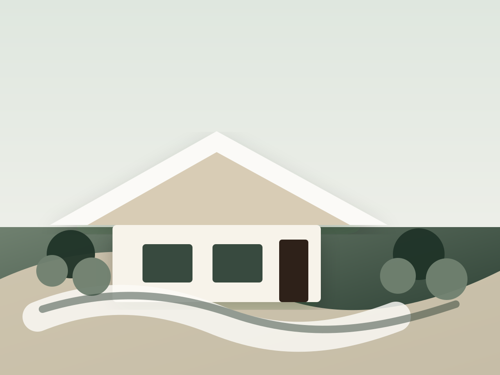

About CEW
Landscape experience, practical problem solving, and work done the right way.

Temporary image. Replace with Chad or a polished finished jobsite photo.
Led by Chad Walters in Northwest Arkansas.
CEW Landscape started in 2020, but Chad brings more than 20 years of landscape experience in Northwest Arkansas. His background includes landscape architecture training from the University of Arkansas and hands-on work across design, installation, drainage, irrigation, and outdoor improvements.
2020CEW started
20+years experience
NWAlocal work
- Unique landscape design and detailed installation
- Drainage, grading, irrigation, and hardscape knowledge
- Clear options for different project needs and budgets
- Finished work that fits the property and neighborhood
CEWCEWLandscape
Placeholder logo direction until the final CEW mark is designed.